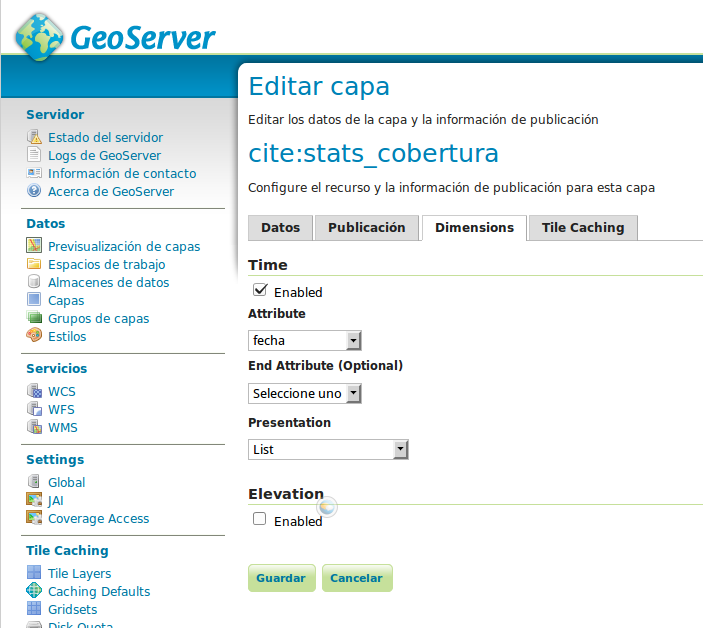

Configuración de capas temporales
| Fecha | Autores |
|---|---|
| 16 Marzo 2015 | Fernando González (fernando.gonzalez@fao.org) |
| 17 Enero 2018 | Micho García (micho.garcia@geomati.co) |
©2013 FAO Forestry
Excepto donde quede reflejado de otra manera, la presente documentación se halla bajo licencia : Creative Commons (Creative Commons - Attribution - Share Alike: http://creativecommons.org/licenses/by-sa/3.0/deed.es)
La configuración de capas temporales consta de tres etapas:
- Preparación de los datos
- Publicación en GeoServer
- Configuración de la capa en el portal
Los dos primeros pasos dependen del tipo de datos que se quiere publicar, vectorial o raster.
Preparación y publicación de capas vectoriales
La preparación consistirá en introducir una columna de tipo fecha con la fecha para la cual ese registro es válido. Esto se puede realizar para shapefiles o para bases de datos PostGIS indistintamente, pero el campo ha de ser de tipo fecha.
La publicación en GeoServer se hace exactamente igual al de cualquier otra capa y la diferencia es que una vez la capa está publicada, hay que ir a la pestaña "Dimensiones" de la capa en cuestión y habilitar el checkbox para Tiempo. En el combo que aparece como "Atributo" hay que seleccionar el campo fecha añadido anteriormente, y para "Presentación" hay que seleccionar "List". Una vez esta configuración se guarda, la capa ya está preparada para servirse en distintas instancias temporales.

Configuración de la capa en el portal
La configuración de la capa en el portal sólo implica añadir un atributo "timeInstances" al elemento portalLayer::
{
"id" : "mascara_forestal",
"label" : "Máscara forestal",
"layers" : [ "forest_mask_wms" ],
"timeInstances" : "2000-01-01T00:00:00.000Z,2005-01-01T00:00:00.000Z,2010-01-01T00:00:00.000Z"
}
El formato del atributo es una lista de fechas separadas por comas en la que cada fecha tiene el siguiente formato: yyyy-MM-ddTHH:mm:ssZ, donde:
- yyyy es el año
- MM es el mes
- dd es el día del mes
- T separa fecha y hora
- HH es la hora en formato 24h
- mm son los minutos
- ss son los segundos
- Z indica el final de la fecha
Anteriormente este parámetro se llamába
wmsTimey se configuraba en los elementoswmsLayerpor lo que es posible encontrar algún fichero con el formato antiguo que esté configurado de esta manera.Portal: Configuración de capas temporales